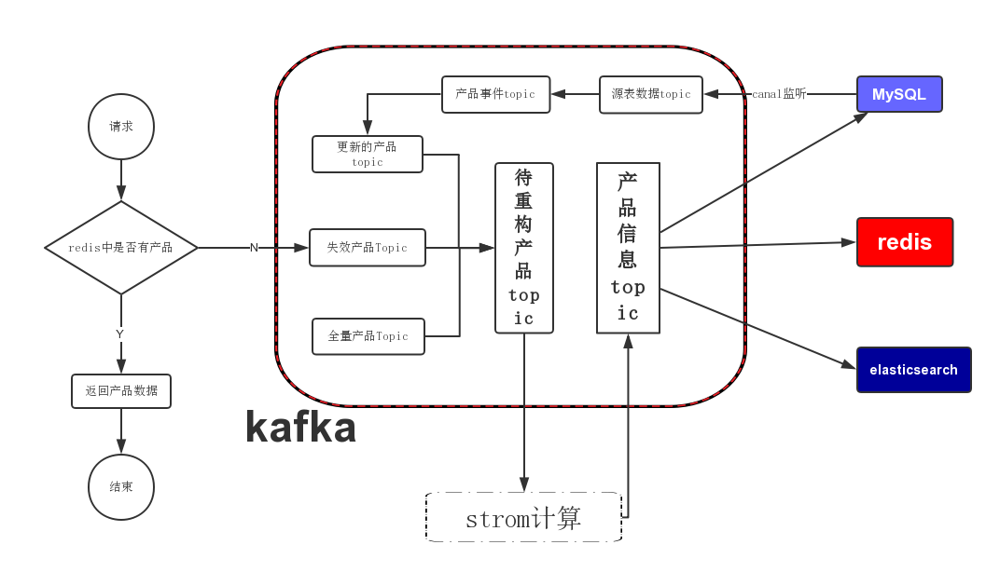

背景
因为业务需要, 公司现在需要一个实时的计算平台来支撑上层的各种业务
借这个机会, 对我们用到的相关技术部分进行了整理
业务场景分析
下面拿我自己经历的两个项目来探讨一下实时计算平台的构建和使用
以及其中遇到的一些坑
业务1. 统一的产品池服务
需求
- 统一产品数据池
由于公司部门比较分散,公司的不同品类的产品(在线旅游公司)分属不同的BU(Business Unit),不同部门之间不仅数据不互通, 而且使用的数据库,产品数据结构和使用的存储技术也都不相同, 数据库存储主要使用Oracle和MySQL
我们组的业务由于含有统一的列表页和内容服务, 所有分类产品的相关信息都需要进行聚合展示, 同时考虑到产品数据的热点特性
我们需要一个统一的产品池功能来提供最基本的产品信息查询, 之后所有组内的产品信息统统通过产品池进行获取, 这样把数据和业务进行充分解耦
上层业务不需要了解各种分类的产品信息的存储位置和处理逻辑,只需要从统一的产品池获取产品信息即可
同时作为基础的数据服务还需要保证服务的性能和高可用性
于是有了产品池这个项目
组件
主要涉及的中间件和服务redis,kafka,storm,elasticsearch,mysql
项目详情
- 对接各BU, 整合各BU的产品信息到统一的产品容器内(选择redis/es作为主要的对外存储容器)
- 提供统一的产品信息获取接口
整体结构

其中各组件的主要功能:
Redis: 存储k-v结构的产品信息, 提供前台api接口的产品基础信息查询数据
Elasticsearch: 提供后台和部分前台对产品的搜索功能
kafka: 数据总线, 后台数据流转的核心
mysql/oracle: 提供最初始的数据源
storm: 产品信息计算
流程图
前台api获取产品的流程
1 | st=>start: Start |
后台构建产品的流程
1 |
|
详细步骤描述
定时的产品id添加: 定期进行全量的产品数据重建, 为了方便控制重建过程, 将要处理的产品id分批存入kafka中的
全量重建topic, 也就是把批处理转化为流处理失效的产品id: 当某个产品不存在于redis中时, 也会重新放入kafka的另外的
miss产品topic中进行重建当产品信息变更时候也会有对应的变更产品id入kafka的
变更产品topic中进行重建处理产品时会从以上三个产品源topic中读取需要重建的产品, 根据分类发放到
不同的分类topic, 然后交给storm进行产品信息计算, 这部分信息只有简单的产品ID和更新类型标识storm中构建失败的产品(数据库中不存在等原因), 会在redis中进行标记暂时不可用(有效期1天), 不可用的产品不会继续进行重建
kafka多个topic中的消息含有需要构建的 产品id和产品需要构建的内容, 也就是说可以通过消息内容格式控制构建产品的某个部分的信息(例如: 只更新产品的基本信息, 只更新价格信息, 只更新评论数,好评数等信息)
storm从kafka中获取消息, 进行产品的信息计算, 计算完成的信息会重新返回kafka, 同样根据产品分类发放到不同的
分类topic, 这部分信息含有全量的产品信息数据整合各个分类topic的产品计算结果, 写入redis 和 es, 并回写部分mysql表
产品数据更新
通过canal监听mysql数据库的产品表数据变更, 将变更数据发给kafka中的产品表日志topic, 后续从kafka的产品日志topic ,根据数据内容解析出来产品更新事件, 封装对应的事件消息, 存入产品事件topic
通过读取产品事件topic中的数据, 根据品类和变更内容, 向产品池变更产品topic中发送发送产品池信息重构需求
为什么要分多个产品数据源topic
为了优先级考虑, 不同来源的产品对时效性要求是不同的, 但是kafka本身又做不了带有优先级的消息处理
不同的分类的产品的处理逻辑不同, 更新频率和数据量也不同, 提前进行分流
为什么不同分类的产品要用不同的写入topic
- 如果有其他业务需要使用其中某个分类的产品数据只需订阅对应的产品topic流就可以了, 免去了从全量产品流中过滤的步骤
为什么最后还要把产品信息吐会回kafka
为了统一控制写入源并做优化, 使用统一的topic存储数据可以让整个程序只有一个数据写入的源, 所有写入操作统统使用写总线来处理, 解耦了功能, 提高了可靠性, 扩展性和可维护性
可以对数据写入做优化, 比如:幂等处理, 批压缩写入处理, ABA问题的重写
为了数据重用, 因为其他部分业务组也可能需要使用产品信息, 到时候直接订阅最终的产品信息表就可以了
为了方便扩展, 如果将来数据量大, 出现了写入瓶颈, 只要对这一部分承担写总线功能的写入程序进行扩展就可以了
业务2. 用户画像之用户信息完善系统
需求
这个项目是用户画像的子项目, 目的是将用户分布在不同BU的信息进行整合, 提供一份统一最完整的用户信息出来
同时进行一些数据清洗和数据统计
- 对分散在各个表中的会员信息进行梳理, 整合一份相对比较完善的用户信息
例如: 用户1在基本信息中填写了一份信息 {“username”:”zhang”,”birthday”:”1990-01-01”,”gender”:”M”}
同时用户上传了一张个人身份证, 通过解析, 身份证含有的信息是{“birthday”:”1990-12-07”,”gender”:”F”}
也就是说用户自己填写的信息和身份证中的信息不一致, 相同的情况可能出现在多个业务部门, 因为业务拆分各部门相互独立, 同一个用户在多个业务部门可能拥有多份不太一致的用户信息
- 对进行过清洗的用户数据进行完善度的计算
根据不同用户信息字段占有的不同分值权重, 使用完善后的用户信息, 对用户的完善度进行实时统计
- 定期统计用户的完善度报表
根据用户会员等级/地区/性别 等基本属性和 对应的销售vip客服人员进行用户信息的报表统计
组件
主要相关的组件有 mysql,kafka,storm,hbase, es
项目详情
- 对接各数据源, 根据用户身份表示整合统一的用户信息
- 统一存储用户信息
ps:由于部分原因, 项目的实际开发时间很短, 只有200左右的工时, 也就是一个人工作一个月, 而且大部分时间都花在内部数据问题的处理上面, 所以项目未能做到最终非常完善的程度
流程
- 定期的全量用户信息补全
- 用户信息变更以后触发的补全
- 用户资料补全以后进行完善度的计算
- 定期根据用户属性对用户完善度进行报表统计
具体的细节跟上面产品池相似, 都是利用kafka的数据流转, 将需要计算的消息流到storm, 经过计算以后再通过kafka 回馈给数据库和存储
总结
其实回顾这两个项目
在其中主要起作用的中间件主要是kafka和storm
kafka 承担了系统几乎所有的数据流转需求, 做了一个数据总线的角色, 提供了事件驱动,ETL,解耦等功能
storm 则承担了主要的计算任务和部分数据转发功能
其他 mysql, redis,elasticsearch则一直充当数据提供方和数据使用方(业务)之间的网关作用
这一套消息处理流程目前来看还没遇到太大的问题, 但是因为我们部门业务相对比较单一, 尚不能完全发挥这套架构的潜力
希望以后可以多尝试, 并进行改进